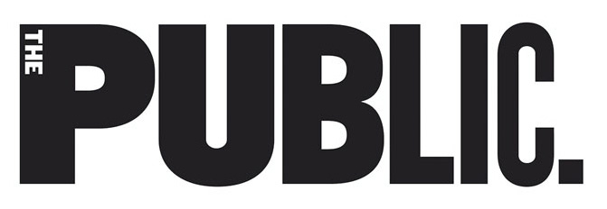
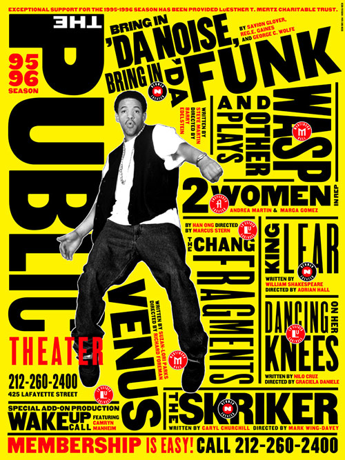
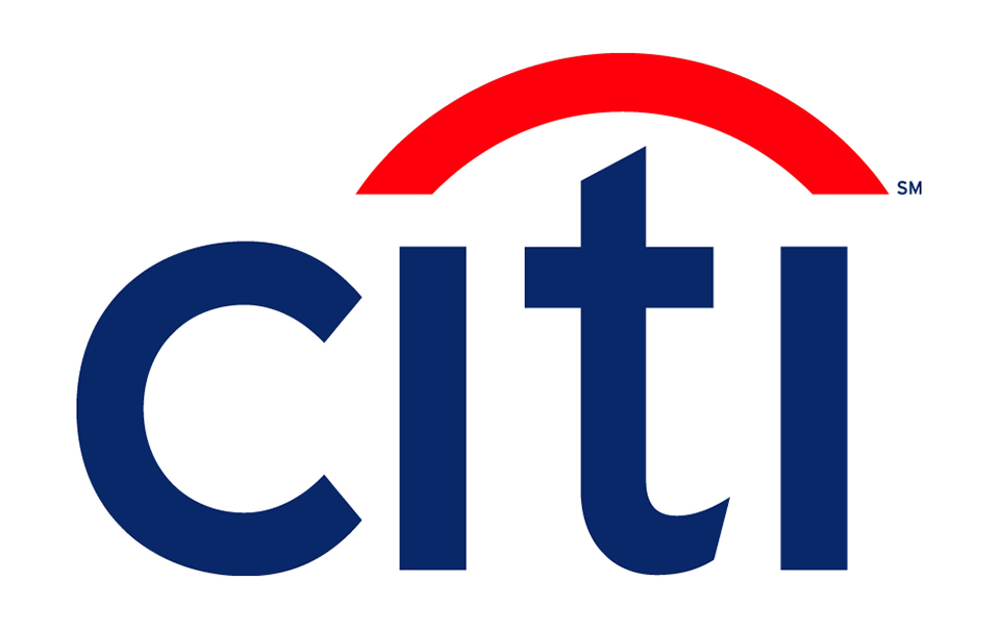
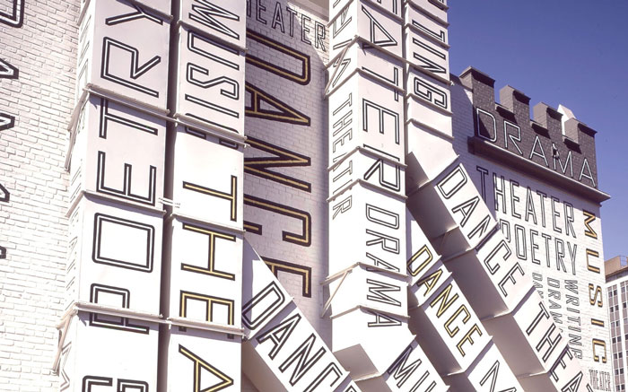
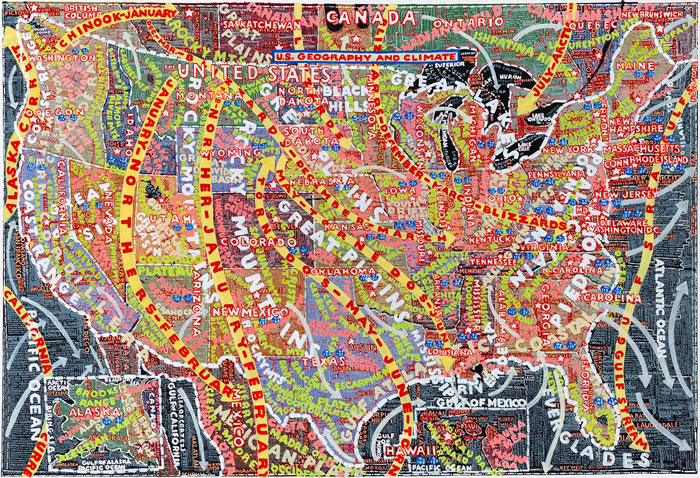

What makes Paula Scher one of the most influential graphic designers?
By Laura Foy
Introduction
Who is Paula Scher?
Paula Scher (born 0ctober 6, 1948 in Washington D.C.) is an incredibly influential New York based American contemporary graphic designer and artist, famous for the way she fuses contemporary pop culture with fine art in her work. I’m sure that many including myself would agree that she has played a major role in revolutionizing the graphic design industry for over four decades now. Scher has a great passion for typography and this is very much reflected in her work. She went to the Tyler School of Arts to study illustration and it was there that she fell in love with typography. Her use of type goes beyond contemporary graphic design as she also paints with words.
Scher has been a partner in the New York Pentagram office since 1991 and remained to be the only woman partner until Lisa Strausfeld was made partner in 2002. As a young female designer, I find it really inspiring that Scher stands to be one of the most influential graphic designers in such a heavily male-dominated industry.
By taking a look at different areas of her work I hope to come to come to a conclusion as to why Paula Scher holds such a big influence the world of graphic design as well as the everyday people engaging with her work.
The Public Theater
The Identity
Paula Scher been designing for The Public Theater since 1994. Her first project for The Public came after joining the New York Pentagram office and was to create an identity for the theater. She has said that the inspiration for the design of the Public Theater identity came when she was looking through her favorite book on American wood type. She came across a set of R’s that went in a line from the skinniest width to widest and was inspired to take a similar approach to the letters of PUBLIC. This is what became the iconic identity for the Public Theater.
Scher had created an identity that is vibrant, dynamic, easily recognizable and perfectly represents the Public Theater for what it is; an “artist driven, radically inclusive, and fundamentally democratic” New York based cultural institution. The bold sans-serif type and simple yet sharp images reflects the street typography of New and the energy of their productions.In 1996 this identity won her the Beacon Award for integrated corporate design strategy.

Bring in ‘Da Noise, Bring in ‘Da Funk
In 1995 Scher, with Pentagram designed a set of iconic posters for The Public Theatre’s production of Savion Glover’s ‘Bring in Da’ Noise, Bring in Da’ Funk. These posters featured the same wood typefaces as The Public’s identity she had designed previously. In these posters, the typography surrounds the tap artist and has a very loud, bold and urban look, in keeping with contemporary culture of the time. You might even say that the typography is noisy, and you’d be right. This was a deliberate and was done to reflect the energetic experience that the show provides.
These posters create a dynamic and energetic visual experience that provokes an intrigue in the show being advertised, this is why I think the style was emulated so much by other theaters. This was the first time that posters for The Public ended up all over the Streets of New York. After that, The Public’s adverting has continued to appear all over New York. This blocky typographic style essentially changed the face of theatre advertising and could be considered as the typeface of New York City itself.
This is a clear example of Scher’s influence. She’s very much a trend setter. The Public’s typographic style was so widely mimicked and that’s why their campaigns have to regularly change as a means of staying fresh in such a competitive market full of copy-cats. Scher continues to do amazing work for the Public Theater and I personally love the vibrant energy that her posters exude.

Records
Long before Scher became a Pentagram partner she had a job designing record covers for CBS and Atlantic records in the 70’s. She works with CBS for 8 years producing over 150 album covers a year for a diverse range of artists including Eric Gale, Bob James, Leonard Bernstein, Roger Dean and Boston. She even earned a total of four Grammy nominations for her designs which is no surprise as her covers manage to be incredibly imaginative and smart while also being accessible and easily understood. Although I'm sure that the designers working in this industry today wouldn’t have as much creative control as she had back then, you can’t deny the influence her approach to designing the covers has had on the approach to designing for the music industry today. An approach that was based very much on working with photographers and illustrators to interpret the music in an almost poetic and symbolic way as opposed to just slapping an uninspired picture of the artist on the cover.
It seems to me that working in this industry is when she really began to infuse contemporary pop culture into her designs.
“As long as I’ve been practicing design, I have been most obsessed with the connection between the work I create and its public. It began when I was a record cover designer in the 70s, working in an area of pop culture where audiences made a connection between graphic design and music.”-Paula Scher
Branding Work
Scher has designed and remade a plethora of identities for a wide range of brands aside from The Public Theatre such as Citibank, Tiffany & Co., Microsoft and CNN. She has also developed branding systems, promotional materials, environmental graphics, packaging and publication designs for an incredibly wide range of clients. It is evident to me from how much of her branding working being seen not only throughout the streets of New York but in cities around the world, that Scher has a great love for creating designs that become a part of the environment. Designs that are easily viewed by the public who pass it in their day to day lives. In this way, her work doesn’t just have an influence on the design world but also the lives of ordinary people that engage with it.
“I love the scale of the poster. I love big things outside. I love working on environments and environmental graphics. And I love when other people engage with them.”-Paula Scher

Her large-scale typographic work has even spread out onto buildings. For the 42nd Street Studios building in New York, she applied giant words onto the doors, floors, ceilings and walls of the building. She also painted the Lucient Technologies Center for Arts Education in Newark, New Jersey white and then placed words like dance, music and drama over the entire building. This communicates the energy and dynamism within as well as what the establishment is all about.

Paintings
Scher’s passion project is painting these magnificent mural scale maps of the world as she sees it. These maps are made up of entirely hand printed masses of information, everything from zip codes to cultural phenomena. The process must be a form of stress relief for Scher as putting in all the time and dedication it takes to complete a map takes her back to the experience of designing that was lost with the coming of technology in the 90’s. These maps have gained her a great amount of attention from exhibitions and rightfully so. They are magnificently unique pieces of work that I had personally never seen anything like before. I feel that these maps are a great example of Scher’s inventive and influential way with type.

Conclusion
Paula Scher’s work has been exhibited all over the world and has earned her over 300 awards from many different international associations and it’s not hard to understand why. Her influence is undeniable. She has been able to come up with more new and inventive ways to make type talk than anyone else ever has. Her work can change the way people view typography, not only can it be a means of effectively delivering information, but it can also be an area to be playful and inventive with. She throughout her career has set the trends that other designers follow particularly so with her work for the Public Theater. She also has the ability to add colour to the environments of ordinary people with her instantly recognizable identities, branding systems and environmental graphics.
As a final note, with such an extensive body of work behind her belt Paula Scher is an undeniable powerhouse. She is stands to be one of the most influential graphic designers in an extremely male dominated industry and that why I view her as an amazing role model, for all up and coming designers but particularly for young women like myself aspiring to be successful in the industry.
With all of this, I hope that I have successfully answered the question of what makes Paula Scher one of the most influential graphic designers.
Bibliography
Abstract: The Art of Design. 2017. [Film] s.l.: Netflix.
Anon., n.d. 1974-1983 CBS/Atlantic Records -Paula Scher. [Online]
Available at: http://paulastribute.weebly.com/1974-1983-cbsatlantic-records.html
[Accessed 8 12 2020].
Artnet, n.d. Paula Scher Artwork. [Online]
Available at: http://www.artnet.com/artists/paula-scher/
[Accessed 19 11 2020].
Bigman, A., 2015. Get to know Paula Scher, titan of postmodern design. [Online]
Available at: https://99designs.ie/blog/famous-design/paula-scher-titan-of-postmodern-design/
[Accessed 19 11 2020].
Binlot, A., 2016. A la carte: Paula Scher’s American maps chart more than just territory. [Online]
Available at: https://www.wallpaper.com/art/paula-schers-american-maps-chart-more-than-just-territory
[Accessed 9 12 2020].
Byrnes, M., 2016. Paula Scher's Hand-Painted, Semi-Accurate Maps of America. [Online]
Available at: https://www.bloomberg.com/news/articles/2016-02-25/paula-scher-s-hand-painted-semi-accurate-maps-of-america
[Accessed 4 12 2020].
Cowan, K., 2019. Paula Scher on falling in love with typography, timeless identities and what it takes to become a great designer. [Online]
Available at: https://www.creativeboom.com/features/paula-scher/
[Accessed 10 12 2020].
Famous Graphic Designers, n.d. Paula Scher. [Online]
Available at: https://www.famousgraphicdesigners.org/paula-scher
[Accessed 2 12 2020].
I.Black Design , 2019. 5 lessons from influential designer Paula Scher.. [Online]
Available at: https://medium.muz.li/5-lessons-from-influential-designer-paula-scher-1bbfa142f96e
[Accessed 10 12 2020].
Lippert, A., 2019. Paula Scher: The Public Theater Collection. [Online]
Available at: https://posterhouse.org/blog/paula-scher-living-legend/
[Accessed 26 11 2020].
Meggs, P. B., 2016. History of Graphic Design. 6th Edition ed. Hoboken, New Jersey: John Wiley & Sons, Inc..
Pentagram, n.d. Paula Scher. [Online]
Available at: https://www.pentagram.com/about/paula-scher
[Accessed 18 11 2020].
Pentagram, n.d. The Public Theater. [Online]
Available at: https://www.pentagram.com/work/the-public-theater/story
[Accessed 25 11 2020].
Popova, M., 2011. Stunning Subjectivity: Obsessive Typographic Maps by Paula Sche. [Online]
Available at: https://www.brainpickings.org/2011/10/21/paula-scher-maps/
[Accessed 4 12 2020].
Poster Poster, 2015. Paula Scher. [Online]
Available at: http://www.posterposter.org/master-featured/paula-scher/
[Accessed 2 12 2020].
Roberts, C., 2015. Graphic design visionaries. London: Laurence King Publishing.
Williams, M., 2019. Paula Scher exhibition looks at graphic design in the public sphere. [Online]
Available at: https://www.creativereview.co.uk/paula-scher-public-theater-design-mcr/
[Accessed 24 11 2020].